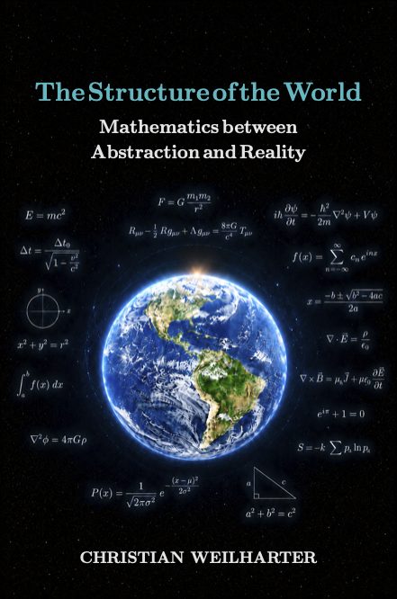

Books

Photon – Theory and Applications
From Classical Physics to Quantum Mechanics
What is a photon – a wave, a particle, or both? This book leads from the classical picture of light to quantum mechanics and shows why photons shape modern technology and fundamental research. Clear, precise, and well-founded.
For curious readers, students, and anyone who truly wants to understand physics.
Highlights:
- Compact overview from classical physics to quantum mechanics
- Clear explanations without requiring advanced mathematics
- Didactic boxes and examples for intuitive understanding
- Suitable for beginners and as in-depth reading for students
Available in German and English
📥 Free Download (PDF)
The complete English edition of Photon – Theory and Applications is freely available on Zenodo:
➜ Now available as a book on Amazon
The Structure of the World
Mathematics Between Abstraction and Reality
The book investigates a fundamental question: Why does mathematics describe the real world so remarkably well? From the early mathematical ideas of antiquity through Galileo, Newton, Gauss, Riemann, and Maxwell to modern quantum mechanics, it shows how mathematical structures have repeatedly led to a deeper understanding of nature.
It considers mathematics not only as a tool, but also asks whether mathematical structures may form a fundamental part of reality itself.
For readers interested in mathematics, physics, and philosophy, as well as students and anyone with a general interest in science.
Highlights:
- Development of mathematical ideas from antiquity to modern physics
- Connections between mathematics, physics, and the history of science
- The roles of Gauss, Riemann, Maxwell, and quantum mechanics
- The question of whether mathematics is invented or discovered
- Accessible presentation supported by mathematical foundations
Published in German
📥 Free Download (PDF)
The complete German edition of The Structure of the World is freely available on Zenodo:
These books were created with the assistance of modern AI tools (e.g. ChatGPT) for phrasing, structuring, and language refinement. The scientific responsibility and verification remain entirely with the author.
View the latest publications on Zenodo →
In Preparation
- Electron – Theory and Applications